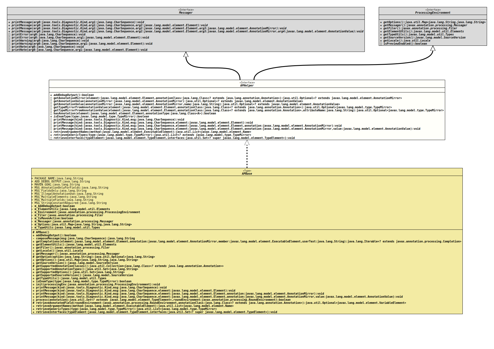

Interface APHelper
- All Superinterfaces:
Messager,ProcessingEnvironment
- All Known Implementing Classes:
APBase
- Author:
- Thomas Thrien (thomas.thrien@tquadrat.org)
- Version:
- $Id: APHelper.java 944 2021-12-21 21:56:24Z tquadrat $
- Since:
- 0.1.0
- UML Diagram
-

UML Diagram for "org.tquadrat.foundation.ap.APHelper"
{kind=link}
-
Method Summary
Modifier and TypeMethodDescriptionbooleanReturns the flag that indicates whether some debug information should be emitted to the generated code.default Optional<? extends AnnotationMirror>getAnnotationMirror(Element element, Class<? extends Annotation> annotationClass) Retrieves theAnnotationMirrorfor the given annotation from the givenElementinstance.default Optional<? extends AnnotationValue>getAnnotationValue(AnnotationMirror annotationMirror) Retrieves the annotation value from the given annotation mirror.default Optional<? extends AnnotationValue>getAnnotationValue(AnnotationMirror annotationMirror, String name) Retrieves the annotation value with the given name from the given annotation mirror.default Optional<TypeMirror>getTypeMirrorFromAnnotationValue(Element element, Class<? extends Annotation> annotationClass) Retrieves aTypeMirrorinstance from an annotation.default Optional<TypeMirror>getTypeMirrorFromAnnotationValue(Element element, Class<? extends Annotation> annotationClass, String attributeName) Retrieves aTypeMirrorinstance from an annotation.default <A extends Annotation>
booleanhasAnnotation(Element element, Class<A> annotationType) Checks whether the given element has the given annotation.default voidprintMessage(Diagnostic.Kind kind, CharSequence msg) default voidprintMessage(Diagnostic.Kind kind, CharSequence msg, Element element) default voidprintMessage(Diagnostic.Kind kind, CharSequence msg, Element element, AnnotationMirror annotation) default voidprintMessage(Diagnostic.Kind kind, CharSequence msg, Element element, AnnotationMirror annotation, AnnotationValue value) default voidretrieveInterfaces(TypeElement typeElement, Set<? super TypeElement> interfaces) Retrieves the interfaces are that implemented or extended by the given type element.Methods inherited from interface javax.annotation.processing.ProcessingEnvironment
getElementUtils, getFiler, getLocale, getMessager, getOptions, getSourceVersion, getTypeUtils, isPreviewEnabled
-
Method Details
-
addDebugOutput
boolean addDebugOutput()Returns the flag that indicates whether some debug information should be emitted to the generated code.
The value is controlled by the value of the annotation processor option "org.tquadrat.foundation.ap.addDebugOutput".
- Returns:
trueif the debug information should be added,falseif not.
-
getAnnotationMirror
default Optional<? extends AnnotationMirror> getAnnotationMirror(Element element, Class<? extends Annotation> annotationClass) Retrieves theAnnotationMirrorfor the given annotation from the givenElementinstance. Only declared annotations are considered, not the inherited ones.- Parameters:
element- The element.annotationClass- The annotation to look for.- Returns:
- An instance of
Optionalthat holds the foundAnnotationMirrorinstance. - See Also:
-
getAnnotationValue
Retrieves the annotation value from the given annotation mirror.- Parameters:
annotationMirror- The annotation mirror.- Returns:
- An instance of
Optionalthat holds the found annotation value.
-
getAnnotationValue
default Optional<? extends AnnotationValue> getAnnotationValue(AnnotationMirror annotationMirror, String name) Retrieves the annotation value with the given name from the given annotation mirror.- Parameters:
annotationMirror- The annotation mirror.name- The name of the desired value.- Returns:
- An instance of
Optionalthat holds the found annotation value.
-
getTypeMirrorFromAnnotationValue
default Optional<TypeMirror> getTypeMirrorFromAnnotationValue(Element element, Class<? extends Annotation> annotationClass) Retrieves a
TypeMirrorinstance from an annotation.In case an annotation defines a
Class<?>attribute, the value for that attribute is eithernullor something strange, but never an instance ofClass<?>. So we need some special code to get something useful from the annotation.This implementations assumes the default name "
value" for the attribute.- Parameters:
element- The annotated element.annotationClass- The type of the annotation.- Returns:
- An instance of
Optionalthat holds theTypeMirrorinstance. - Throws:
NoSuchElementException- The given element is not annotated with an annotation of the given type.
-
getTypeMirrorFromAnnotationValue
default Optional<TypeMirror> getTypeMirrorFromAnnotationValue(Element element, Class<? extends Annotation> annotationClass, String attributeName) Retrieves a
TypeMirrorinstance from an annotation.In case an annotation defines a
Class<?>attribute, the value for that attribute is eithernullor something strange, but never an instance ofClass<?>. So we need some special code to get something useful from the annotation.- Parameters:
element- The annotated element.annotationClass- The type of the annotation.attributeName- The name of the attribute that holds the class.- Returns:
- An instance of
Optionalthat holds theTypeMirrorinstance. - Throws:
NoSuchElementException- The given element is not annotated with an annotation of the given type.
-
hasAnnotation
Checks whether the given element has the given annotation.- Note:
-
- If the retention for the given annotation is not it could have been removed from the element in an earlier compile run.
- Type Parameters:
A- The type of the annotation.- Parameters:
element- The element to inspect.annotationType- The type of the annotation to look for.- Returns:
trueif the element is annotated with the given annotation,falseif not.- See Also:
-
printMessage
- Specified by:
printMessagein interfaceMessager
-
printMessage
- Specified by:
printMessagein interfaceMessager
-
printMessage
default void printMessage(Diagnostic.Kind kind, CharSequence msg, Element element, AnnotationMirror annotation) - Specified by:
printMessagein interfaceMessager
-
printMessage
default void printMessage(Diagnostic.Kind kind, CharSequence msg, Element element, AnnotationMirror annotation, AnnotationValue value) - Specified by:
printMessagein interfaceMessager
-
retrieveInterfaces
Retrieves the interfaces are that implemented or extended by the given type element.- Parameters:
typeElement- The type element to inspect.interfaces- The already retrieved interfaces.
-